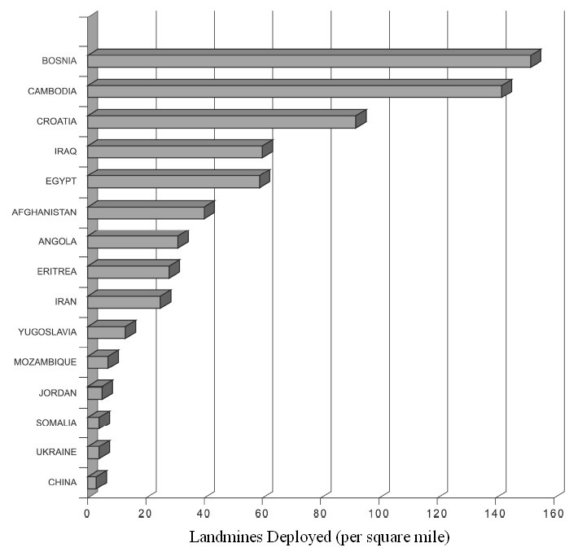
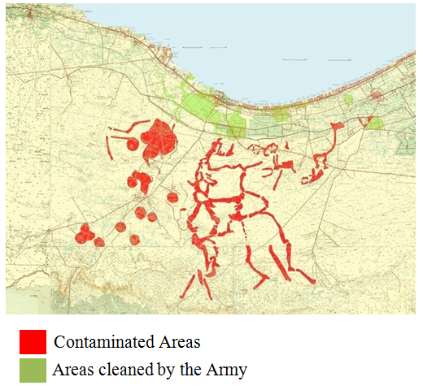

MineProbe: A Distributed Mobile Sensor System for Minefield Reconnaissance and Mapping in Egypt

A landmine is the perfect soldier: Ever courageous, never sleeps, never misses [1]. The simplicity and cost-effectiveness of mines are major factors in explaining the widespread use of mines throughout the numerous countries that are now faced with dealing with the mine contamination problem. The civilian-purpose demining or humanitarian demining aims at finding and removing abandoned landmines without any hazard to the environment. These landmines had been intended for military use when they were planted, but their duty has expired. The antipersonnel landmines can kill or incapacitate their victims. They deny access to land, and its resources. Each year, up to 20,000 new casualties are caused by landmines and unexploded ordnances (UXOs): around 1,500 a month and 40 a day. Landmine injuries include blindness, burns, destroyed limbs and shrapnel wounds. Often the victim dies from the blast because they do not get to medical care in time.
Egypt has been listed as the country most contaminated by landmines in the world with an estimate of approximately 22.7 million landmines and other explosive remnants of war (ERW) [2]. This constitutes more than 20% of the total landmines worldwide. Egypt is also considered as the fifth country with the most antipersonnel landmine per square mile as illustrated in Fig. 1 [3].

The contaminated areas represent 22% of the total surface of Egypt. Development projects in these areas are significantly constrained by landmine and UXO contamination and the civilian casualty rate seems high in proportion to the populations in these areas. In Egypt, agriculture is one of the mainstays of the economy. Landmines are planted in fields, around wells, water sources, and hydroelectric installations, making these lands unusable or usable only at great risk. Egypt could increment its agricultural production if landmines were eliminated from the contaminated regions. The mines in a wide coastal strip, all the way to the Libyan border (and beyond), nearby coastal regions of Suez Canal Zone such as salt lakes and Red Sea coast prevent use of hundreds of thousands of sq. km. of agricultural land, prevent travel on thousands of km. of roads and deny access to potable water. These facts reflect the level of seriousness of landmines in Egypt. The contaminated areas in the North Coast, Gulf of Suez and Red Sea coasts are now being reclaimed for economic development so mine clearance is becoming an urgent priority for the Egyptian government.
North West Coast (NWC)
It is estimated that there are 17.2 million of landmines and UXOs in the North West Coast (NWC) [2]. The contamination of the NWC of Egypt with explosive remnants of war dates back to the military events that took place in the Western Desert during WWII, mainly El Alamein battles (I & II) in 1942. Since then and for 70 years, Egyptians have been bearing the burden of conflicts they were not responsible for or party to. Yesterday’s enemies are now allies and their past conflicts largely forgotten, buried in the ground along with the deadly mines and unexploded ordnance they left behind. The presence of these huge amounts of landmines & UXOs in the NWC constitutes a huge obstacle to the socio-economic development of the region - which is known for its rich natural resources - while representing a continuous threat to local inhabitants inhabiting the region. The existence of landmines and other ERW denies access to an area of approximately 22% of the Egyptian territory. Developing the NWC and its desert hinterland will undoubtedly reflect positively on the macroeconomic indicators of the country and contribute to improving the relationship between man and space in the country through attracting a sizable number of Egyptians currently living in the overcrowded Nile Valley and Delta region. The National Development Plan of Egypt identified immense resources to benefit local dwellers and the overall economic development of the region, including [4]:
- 500,000 acres of land good for agriculture and 3.5 million acres good for grazing;
- 70 million cubic meter of mineral resources;
- 1.8 billion barrel of oil and;
- 8.5 trillion Cubic meter of natural gas.

Paul Jefferson, “An Overviw of Demining Including Mine Deetction Equipment”, ICRC, Report of the 1993 Montreux Symnposium, 1993.
Landmines in Egypt, Ministry of Foreign Affairs, Egypt.
G. Bier, “The Economic Impact of Landmines on Developing Countries”, International Journal of Social Economics, Vol. 30 Iss: 5, pp.651 – 662, 2003.
Executive Secretariat for the Demining and Development of the North West Coast, Progress Report: Concept Paper & Progress Report – January 2013.